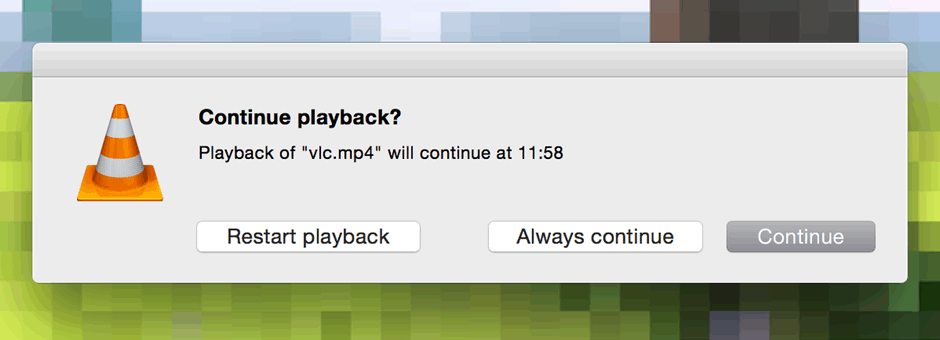
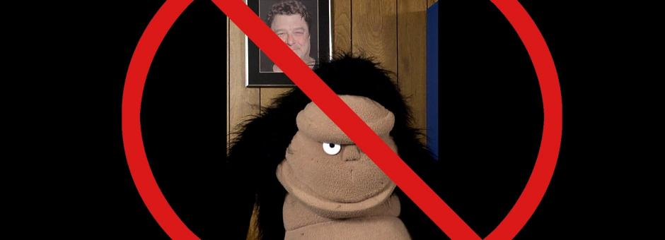
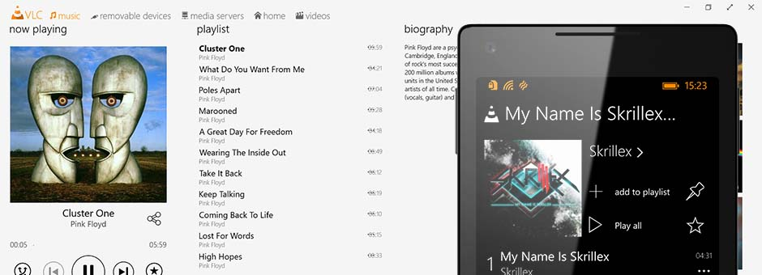
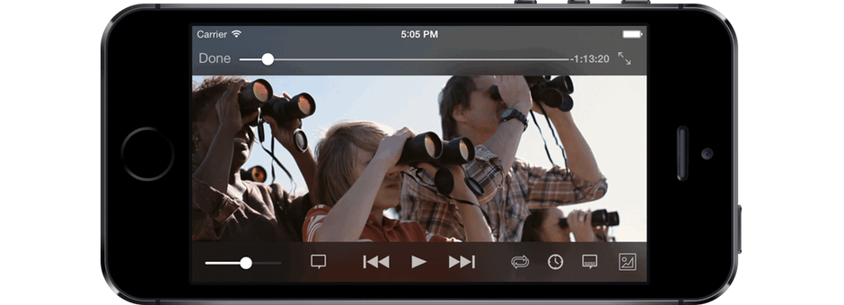
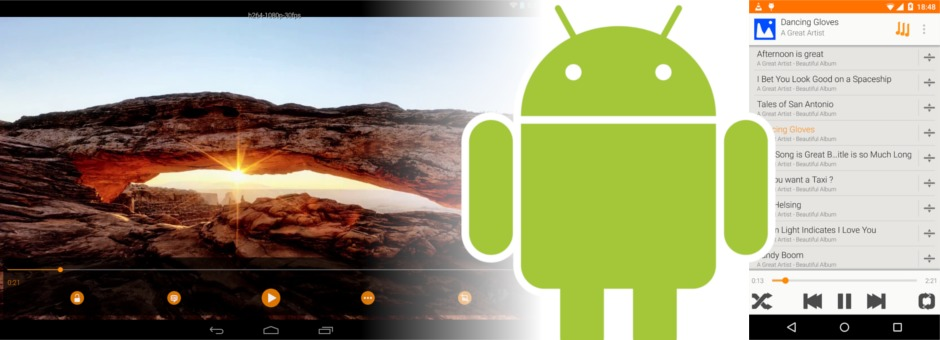
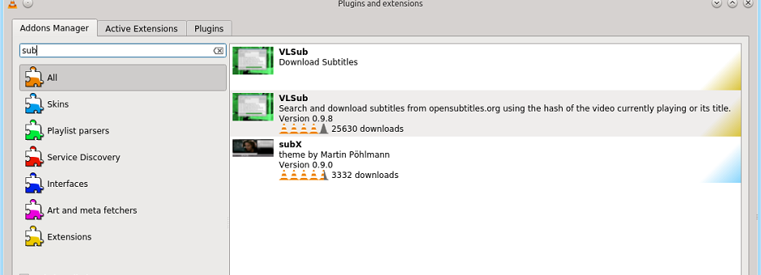

VideoLAN, a project and a non-profit organization.
VLC 2.2.5 "Weatherwax"
VLC 2.2.5 is the fifth bugfix release of the "Weatherwax" branch of our popular media player.






Restart where you left off
Fight the Vertical Video Syndrome
Windows Phone and Windows RT
VLC is back on iOS!
Material update for Android
Addons download from VLC
2.2.5 Highlights
VLC 2.2.5 "Weatherwax" is the fifth update to VLC's 2.2 release series.
Fix green line rendering on Windows with AMD drivers
Fix mp3 playback regression on macOS and 64bit Windows leading to distortion for some media
Fix screenshots size
Improved lua scripts for various websites
Various security improvements in demuxers and decoders
Security hardening for DLL hijacking environments
Fix scrolling sensitivity on Sierra
Fix screen recording on Windows
2.2.0 Highlights
VLC 2.2.0 auto-rotates the videos taken from phones, to fight Vertical Video Syndrome!
VLC now resumes where you left off in all versions
Improves support for new HD codecs, VP9, opus and H.265/HEVC, for decoding and for encoding.
Extensions are now downloadable from within the application.
VLSub extension can download subtitles from the application.
We release at the same time, new versions and betas for iOS, Android, Windows Phone, Android TV and Windows RT.
Read the Press release and the Changelog.

2.2.x Features
Core
- Auto-rotation of phone movies, to fight Vertical Video Syndrome
- Resume playback where you left off
- Extensions API and repository to download extensions directly from the application
- GPU 0-copy support for decoding and displaying using hardware
- Improved support for UltraHD codecs, notably H.265 and VP9
- Subtitles download from the web, using OpenSubtitles
- Audio core upgrade, notably to support short samples
Formats
- Support for BD-Java menus and overlay in Blu-Ray
- Acceleration of VP9 and H.265/HEVC decoders
- Rewritten support for WMV, Ogg, MP4 and AVI, notably for seeking
- Support for encoding in H.265, Opus and VP9
- Support for WebVTT, Ogg/VP8, Opus/MKV, CAF
- Support for THP, Renderware and Escape Replay videogames files
- Support for SRT language detection
Acceleration
- GPU 0-copy decoding-rendering for Android using MediaCodec
- GPU accelerated auto-rotation, in OpenGL, Direct3D and Mediacodec
- GPU 0-copy decoding-rendering for Linux using VDPAU
- Support for HLSL shaders in Direct3D video output
- Media Foundation Transform audio and video decoder for Windows Vista/7
- GPU 0-copy decoding-rendering for RaspberryPi using MMAL
- OpenMAX IL improvements for Android, Linux and rPi
- Support GStreamer codecs on Linux
Codecs / Protocols
- Support for MMS split streams for audio selection (European Parliament)
- Support FTPS (FTP/TLS) protocol
- New decoder for VP8 and VP9 using libvpx for Linux distributions without avcodec
- Improvements on Teletext, Subrip, and Tx3g subtitles
- Support for MSN audio, Atrac3+, VP7, Bink, TAK, On2 AVC, DK3, DK4
- Support for IMC, Vivo g723.1, Smacker, FIC, Auravision, Canopus Lossless
- Support x264 and FFv1 codecs RGB modes
- Fixes for DVD, Audio-CD, M2TS LPCM audio, Speex
Professional
- Support for Digital Cinema Packages and encrypted DCP with KDM
- HEVC encoding and muxing in MP4 and TS
- Support VP8 encoding inside Ogg
- Improvements of audio bar graph, for speed and resiliance
- Support MPEG-2 video encoding through x262
- Large improvements of teletext rendering, for speed and alignments
Platform integration
- Port of the interface to Yosemite
- Support drag'n drop in the skins2 interface
- New TLS module on OS X and iOS, using the central store
- Signature of the Windows binaries
- Improvement of audio device detections on OS X and Windows
- Support of audio ducking in various audio outputs
Mobile Versions
- VLC for iOS 2.5.0 release is out
- VLC for Windows Phone 1.2.0 public beta is out
- VLC for WinRT 1.2.0, x86 and ARM
- VLC for Android TV 1.2.6
- VLC for Android 1.2.6
For developers
- Add equalizer API for libVLC
- Add functions for scrambling detection
- Experimental new C++11 libVLC library: libvlcpp
- New Android buildsystem and Java SDK
- New WinRT library component for libVLC: libVLCX
- Improvements for iOS/OSX VLCKit: Swift support and ARC
Android
- Complete switch to Material design, including black theme
- Support for Audio playlists and modtracker files
- Support for AC-3 Passthrough and 5.1/7.1 audio
- Support switch to background video playback
- Large improvements on the first Android TV release
- Support chapter selections
iOS
- Support for iCloud, box.com and OneDrive
- Support 10-band equalizer
- Support sharing media between devices
- Support Chapters and Title selections
- New player design
- Add media information dialog and timer for playback
Spread the news


Download VLC
Windows
VLC for Windows Version 2.2.5.1Sources
Get the source!Linux
Ask your favorite packager for VLC 2.2!
Related links
- Changelog
- FOSDEM talk about VLC 2.2.0
- VLC media player for Mac OS X 2.2.0
- VLC for iOS 2.5.0
- VLC 2.2.0 WeatherWax
Contact
For any questions related to this release, please contact us.